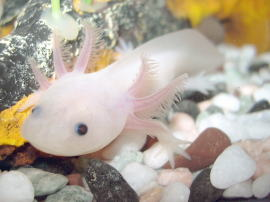

Hydra
The hydra is a tiny freshwater invertebrate, with the ability to regenerate themselves indefinitely. they can regrow limbs and heads, hence the comparison to the mythological hydras. due to these facts they are a pinnacle of research for aging in biology.
Greenland Shark

The greenland shark is one of the longest living creatures, with some recorded to be over 400 years old. However, their longevity and slow reproductive rate makes them highly vulnerable to overfishing.
Immortal Jellyfish
The Immortal Jellyfish, true to its title, has the ability to revert its age when reaching adulthood through a process called transdifferentiation, hence the reason it is considered biologically immortal.
Quahog Clam
The Ocean Quahog Clam, AKA Arctica Islandica is considered the longest living animal. The longest living Quahog was recorded as 507 years old when researchers opened its clam, accidedentaly killing it in the process.
Deep Sea Tubeworms
Deep Sea Tubeworms, also known as "Riftia" have the ability to thrive in the most hazardous climates. These worms can grow really fast, but normally live up to a few hundred years. they also have no mouths or stomachs, thriving on bacteria within their own bodies!
Axolotl
A rare and endangered creature, the Axolotl, only found in in the lakes of Xochimilco have the ability to regrow many of its limbs, as well as it's heart without scarring. Due to their abilities, they are a pinnacle of research study for resistance to cancer!